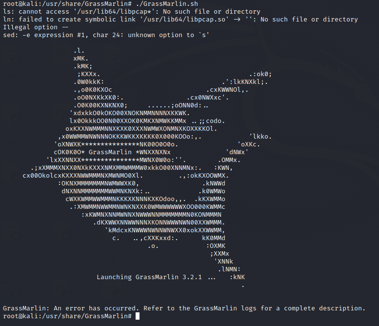

Mapping a ICS Network
https://github.com/nsacyber/GRASSMARLINWARNING: DOES NOT WORK
GRASSMARLIN
GrassMarlin is an example of a tool you can use to identify traffic and systems on your ICS network. Additionally:
•
Developed by the National Security Agency (NSA), GRASSMARLIN is a passive network mapper dedicated to
Industrial Control Systems (ICS) and Supervisory Control and Data Acquisition (SCADA) networks in support of
network security assessments.
•
GRASSMARLIN passively maps, and visually displays, an ICS/SCADA network topology while safely conducting
device discovery, accounting, and reporting on these critical cyber‐physical systems.
•
GRASSMARLIN gives a snapshot of the ICS network including:
– Devices part of the network;
–
Communications between these devices;
– Metadata extracted from these communications.
•
Reads in Zeek Connection logs, PCAP files and PCAP‐NG files or can listen on the wire
install
Java:
sudo apt update && sudo apt upgrade
sudo apt install -y default-jdk
java -version
Download:
https://github.com/nsacyber/GRASSMARLIN/releases/
wget "https://github.com/nsacyber/GRASSMARLIN/releases/download/v3.2.1/grassmarlin-3.2.1-1.el6.x86_64.rpm"
apt install alien
alien -i grassmarlin-3.2.1-1.el6.x86_64.rpm
execute:
cd /usr/share/GrassMarlin
./GrassMarlin.sh
DOES NOT WORKcreate a PCAP file
tcpdump -n -s 0 -i eth0 -w file.pcap